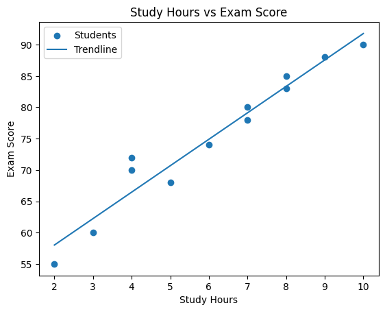

Study Hours vs Exam Score
This chart shows a strong positive relationship between study hours and exam scores, meaning students who study more tend to perform better. Based on this pattern, increasing structured and consistent study time could improve overall academic performance.